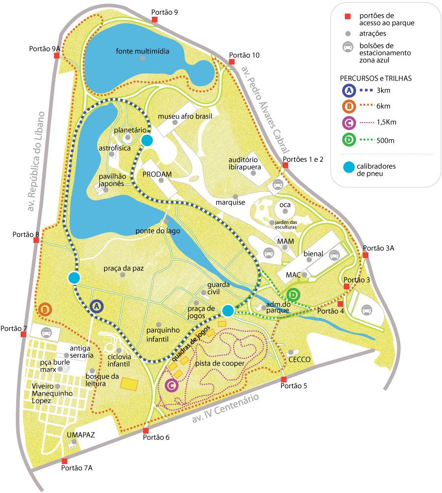

.png)

Parque do Ibirapuera
Endereço: Av. Pedro Álvares Cabral - Vila Mariana, São Paulo - SP
Área: 1.584.000 m²
Inauguração: 21/08/1954
Aberto diariamente das 5h às 00h
Entrada: Gratuita
Site do parque: Clique aqui
Contato: faleconosco@urbiaparques.com.br
Fone: (11) 5574-5045
Sobre o Parque
No Ibirapuera há diversos atrativos para o público desde passeio culturais e educativos como caminhada monitoradas, atividades de observações de pássaros, possuindo esculturas, museus e monumentos históricos além dos jardins e paisagens repletas de flores e arvores, o parque está aberto diariamente das 05h às 24h.
Lá também tem pistas de Cooper, parque infantil, áreas de estar, ciclo faixa, bicicletário com aluguel de equipamentos, fonte multimídia, quadras poliesportivas, campos de futebol, aparelhos de ginástica e praças. Oferece estacionamento operado pelo sistema zona azul.
Atividades que podem ser feitas no parque
- Caminhada
- Ciclismo
- Corrida
- Futebol
- Piquenique
- Andar de Skate
- Visita aos museus
- Vôlei
Mapa do parque
Imagens do Parque
Avaliação da equipe
Nota:
"Por ter uma vegetação bastante vasta e tendo uma área gigantesca, o Parque do Ibirapuera quebra a rotina dos brasileiros, por estar no meio da cidade mais movimentado do Brasil, permitindo com que eles façam vários tipos de atividades físicas ao lado da natureza e as crianças também possam brincar na grama ou com outras crianças no playground. Mas para os que não gostam de se exercitar o parque possui lindas paisagens para tirar fotos ou até mesmo ter um encontro romântico ao lado do lago e para os que estão solteiros, o parque possui alguns museus de arte para os facinados pela arte."